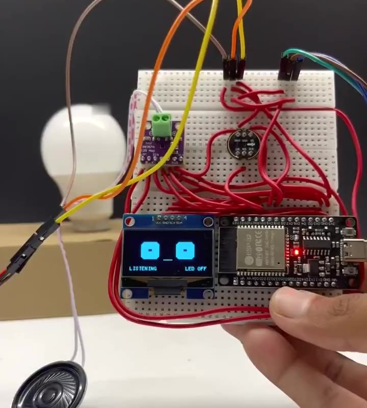
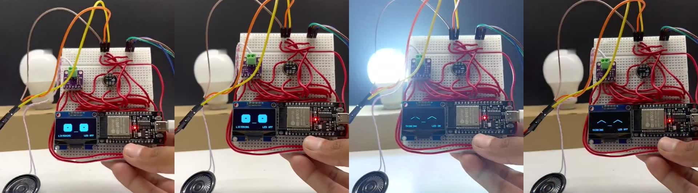
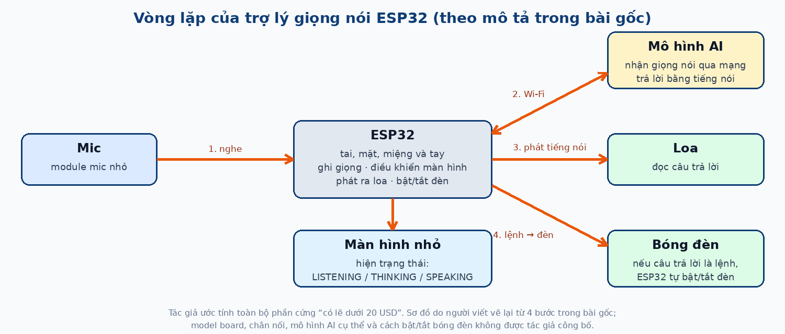

Trợ lý giọng nói bằng ESP32 dưới 20 USD: cách hoạt động, những gì video không nói và các phản biện
Ba chế độ đọc: dùng 3 nút tròn ở góc dưới bên phải để chuyển nhanh (trên điện thoại, ba nút nằm thành một thanh ở cuối màn hình để không đè chữ bên phải). VI — bản dịch tiếng Việt đầy đủ, theo từng đoạn. EN — nguyên văn tiếng Anh, không tách cụm. Cụm (mặc định, biểu tượng A gạch dưới) — tiếng Anh tách thành các cụm theo mệnh đề; rê chuột hoặc chạm vào một cụm để xem nghĩa tiếng Việt. Chạm lần nữa hoặc chạm ra ngoài để đóng; với cụm chứa liên kết, trên điện thoại chạm lần đầu để xem nghĩa, chạm lần hai để mở liên kết. Chế độ được ghi nhớ trên máy này; có thể mở thẳng bằng ?mode=vi, ?mode=en hoặc ?mode=chunk. Ở chế độ Cụm, ô “Gạch chân nhẹ các cụm” vẫn dùng được. Đây là bài tổng hợp có dịch và giải thích, không phải bản dịch nguyên văn. Hình ảnh trích từ video của tác giả, đăng vì mục đích học tập phi thương mại có ghi công; sơ đồ do người viết vẽ.

TL;DR
- @ardchain khoe một bo ESP32 cùng màn hình nhỏ, mic, loa và bóng đèn: bạn nói, nó trả lời bằng tiếng nói và bật/tắt đèn theo lệnh. Anh ước tính phần cứng “có lẽ dưới 20 USD”.
- Bốn bước: mic ghi giọng, màn hình hiện trạng thái (nghe, nghĩ, nói), giọng đi qua Wi-Fi tới một mô hình AI và quay về dạng tiếng nói, nếu là lệnh thì ESP32 tự bật/tắt đèn. Chip là “tai, mặt, miệng, tay”; bộ não là mô hình ở xa.
- Đây là bản phác kiến trúc, không phải hướng dẫn: không có model bo, nối dây, mã nguồn hay cách điều khiển đèn. Phần trả lời: tác giả nói dùng Whisper; có người nhận xét đây không phải local AI và nghi ngờ độ trễ.
- Bài viết “$8 chip chạy local AI” mà post trích dẫn không khớp với kho mã nó dẫn: mô hình ở đó chỉ kể truyện và không có quy trình giọng nói. Các số liệu và số chân trong bài đó chưa được kiểm chứng.
Bài đăng nói về điều gì
What the post is about
What the post is about
Ngày 17/11/2026, @ardchain đăng một video dài 27 giây với câu mở đầu đầy tính chào hàng: “bạn có thể thấy nó rẻ đến mức nào, và hơn nữa nó thực sự hữu ích”. Trên bảng mạch cắm thử (breadboard) là một bo ESP32, một màn hình nhỏ, một module micro, một loa nhỏ và một bóng đèn. Bạn nói chuyện với nó, nó trả lời bằng giọng nói, và khi bạn ra lệnh bật/tắt đèn, nó thực hiện ngay. Ước tính của chính tác giả: “toàn bộ phần cứng có lẽ dưới 20 USD”.
On 17 Nov 2026 @ardchain posted a 27-second video with a pitch in its first line: “you can see how cheap this is, and on top of that it’s actually useful”. On a breadboard sit an ESP32, a tiny screen, a microphone module, a small speaker and a light bulb. You talk to it, it answers out loud, and when you tell it to switch the light, it does. The author’s own estimate: “all of the hardware is probably under $20”.
On 17 Nov 2026 @ardchain posted a 27-second video with a pitch in its first line: “you can see how cheap this is, and on top of that it’s actually useful”. On a breadboard sit an ESP32, a tiny screen, a microphone module, a small speaker and a light bulb. You talk to it, it answers out loud, and when you tell it to switch the light, it does. The author’s own estimate: “all of the hardware is probably under $20”.
Bài đăng khá ngắn và không phải hướng dẫn lắp ráp: nó chỉ mô tả bốn bước hệ thống vận hành, không kèm danh sách linh kiện, sơ đồ đấu dây hay mã nguồn. Bài viết này dịch và giải thích bốn bước đó, mô tả những gì thực sự nhìn và nghe thấy trong video, tổng hợp các thông tin bổ sung từ phần trả lời, đồng thời đối chiếu bài viết trước đó của tác giả (được trích dẫn trong post) với kho mã GitHub đi kèm.
The post is short and is not a build guide: it gives a four-step description of how the system works, not a parts list, wiring or code. This article translates and explains those four steps, describes what can actually be seen and heard in the video, collects what the replies added, and checks the author’s earlier article that the post quotes against the GitHub repository it cites.
The post is short and is not a build guide: it gives a four-step description of how the system works, not a parts list, wiring or code. This article translates and explains those four steps, describes what can actually be seen and heard in the video, collects what the replies added, and checks the author’s earlier article that the post quotes against the GitHub repository it cites.

Cách hoạt động theo bốn bước của tác giả
How it works, in the author’s four steps
How it works, in the author’s four steps
- Một module mic nhỏ lắng nghe; ESP32 ghi lại giọng nói của bạn.A small microphone module listens; the ESP32 records your voice.A small microphone module listens; the ESP32 records your voice.
- Màn hình hiển thị trạng thái đang làm việc: đang nghe, đang nghĩ, đang nói.The screen shows what it is doing: listening, thinking, speaking.The screen shows what it is doing: listening, thinking, speaking.
- Âm thanh giọng nói đi qua Wi-Fi tới một mô hình AI; câu trả lời quay về dưới dạng tiếng nói.The voice goes over Wi-Fi to an AI model; the answer comes back as speech.The voice goes over Wi-Fi to an AI model; the answer comes back as speech.
- Nếu câu trả lời là một lệnh điều khiển, chính ESP32 sẽ trực tiếp bật/tắt đèn.If the answer is a command, the ESP32 switches the light itself.If the answer is a command, the ESP32 switches the light itself.
Câu tóm tắt của anh: “con chip là đôi tai, khuôn mặt, cái miệng và đôi tay. Bộ não là một mô hình mà nó gọi tới.” Nói cách khác, ESP32 gần như không tự “suy nghĩ”. Nó đóng vai trò đầu vào/đầu ra (I/O): thu âm, vẽ biểu cảm trạng thái, phát tiếng và điều khiển đèn, còn khâu nhận dạng giọng nói và sinh câu trả lời diễn ra trên một mô hình ở xa qua kết nối mạng.
His summary: “the chip is the ears, the face, the mouth and the hands. The brain is a model it calls.” In other words the ESP32 does almost no “thinking”. It is the I/O front end: it captures audio, draws a status face, plays sound and drives the light, while recognition and the reply happen on a model reached over the network.
His summary: “the chip is the ears, the face, the mouth and the hands. The brain is a model it calls.” In other words the ESP32 does almost no “thinking”. It is the I/O front end: it captures audio, draws a status face, plays sound and drives the light, while recognition and the reply happen on a model reached over the network.

Video thực sự cho thấy gì
What the video actually shows
What the video actually shows
Người viết đã gỡ băng lời thoại của đoạn video 27 giây bằng một công cụ nhận dạng giọng nói tự động (nên câu chữ bên dưới có thể có sai sót nhỏ). Đó là một cuộc đối đáp đơn giản: trợ lý chào hỏi, xưng tên (nghe giống “Rebo”, “trợ lý thông minh nhỏ của bạn”), bật đèn khi được yêu cầu, tắt đèn khi được yêu cầu, và trả lời câu hỏi “bạn khỏe không?”.
The writer transcribed the audio of the 27-second clip with an automatic speech-to-text tool (so the wording below may contain small errors). It is a simple back-and-forth: the assistant greets, says its name (it sounds like “Rebo”, “your little smart assistant”), turns the light on when told, turns it off when told, and answers a “how are you doing?”.
The writer transcribed the audio of the 27-second clip with an automatic speech-to-text tool (so the wording below may contain small errors). It is a simple back-and-forth: the assistant greets, says its name (it sounds like “Rebo”, “your little smart assistant”), turns the light on when told, turns it off when told, and answers a “how are you doing?”.
- “Hello” → “Hey there, how can I help you?”“Hello” → “Hey there, how can I help you?”“Hello” → “Hey there, how can I help you?”
- “What’s your name?” → “I’m Rebo, your little smart assistant.”“What’s your name?” → “I’m Rebo, your little smart assistant.”“What’s your name?” → “I’m Rebo, your little smart assistant.”
- “Turn on the light.” → “Sure. The light is on.” (bóng đèn sáng lên)“Turn on the light.” → “Sure. The light is on.” (the bulb lights up)“Turn on the light.” → “Sure. The light is on.” (the bulb lights up)
- “Now turn off the light.” → “Okay. Light is off.”“Now turn off the light.” → “Okay. Light is off.”“Now turn off the light.” → “Okay. Light is off.”
- “How are you doing?” → “I’m doing great. Thanks for asking.”“How are you doing?” → “I’m doing great. Thanks for asking.”“How are you doing?” → “I’m doing great. Thanks for asking.”
Về độ trễ: dựa theo mốc thời gian của bản gỡ băng, khoảng cách từ lúc người nói dứt lời đến lúc trợ lý bắt đầu trả lời trong đoạn clip này chỉ khoảng một đến hai giây rưỡi. Liệu đó có phải độ trễ thực tế hay không lại là chuyện khác (xem phần trả lời bên dưới): video rất ngắn, và người viết không thể xác định từ tệp video xem nó có bị cắt ghép hay không.
On timing: going by the transcript timestamps, the gap between the end of a spoken request and the start of the reply is roughly one to two and a half seconds in this clip. Whether that is the real latency is a different question (see the replies below): the video is short, and the writer cannot tell from the file whether it was edited.
On timing: going by the transcript timestamps, the gap between the end of a spoken request and the start of the reply is roughly one to two and a half seconds in this clip. Whether that is the real latency is a different question (see the replies below): the video is short, and the writer cannot tell from the file whether it was edited.
Muốn dựng lại cần gì, và video không nói gì
What you would need, and what the video does not tell you
What you would need, and what the video does not tell you
Từ bài đăng, bạn chỉ có thể liệt kê linh kiện theo vai trò: một bo ESP32, một màn hình nhỏ, một module mic, một loa nhỏ, một bóng đèn, breadboard cùng dây nối, cộng thêm Wi-Fi và quyền truy cập vào một mô hình AI. Tác giả chỉ cung cấp thông tin đến đó. Những chi tiết sau không được nêu ở bất kỳ đâu trong bài đăng hay các trả lời hiển thị:
From the post you can list the parts by role: an ESP32 board, a small screen, a microphone module, a small speaker, a light bulb and a breadboard with jumper wires, plus Wi-Fi and access to an AI model. That is all the author gives. The following are not stated anywhere in the post or its visible replies:
From the post you can list the parts by role: an ESP32 board, a small screen, a microphone module, a small speaker, a light bulb and a breadboard with jumper wires, plus Wi-Fi and access to an AI model. That is all the author gives. The following are not stated anywhere in the post or its visible replies:
- model ESP32 chính xác, model màn hình và module mic, mạch khuếch đại/điều khiển loa và sơ đồ nối chân;the exact ESP32 variant, the screen and microphone module models, the speaker driver and the pin wiring;the exact ESP32 variant, the screen and microphone module models, the speaker driver and the pin wiring;
- mã nguồn, thư viện và dịch vụ AI được sử dụng (mô hình duy nhất được nhắc tên là Whisper, trong một bình luận trả lời);the code, libraries and the AI service used (the only model named is Whisper, in a reply);the code, libraries and the AI service used (the only model named is Whisper, in a reply);
- thành phần đọc câu trả lời ra tiếng (text-to-speech) và thành phần sinh nội dung trả lời;what speaks the answer (text-to-speech) and what generates the reply text;what speaks the answer (text-to-speech) and what generates the reply text;
- cách thức bật/tắt bóng đèn (video không cho thấy rơ-le hay mạch điều khiển; bóng đèn điện lưới bắt buộc phải có mạch như vậy, nhưng đây là suy đoán của người viết), và mọi thông tin về an toàn điện lưới;how the bulb is switched (the video does not show a relay or driver; a mains bulb needs one, but this is the writer’s assumption), and anything about mains-voltage safety;how the bulb is switched (the video does not show a relay or driver; a mains bulb needs one, but this is the writer’s assumption), and anything about mains-voltage safety;
- bảng kê chi phí cho con số “dưới 20 USD”, vốn được tác giả rào đón bằng chữ “có lẽ”, và chưa hề tính tiền gọi API của mô hình AI.a bill of materials behind “under $20”, which the author hedges with “probably”, and which leaves out the cost of AI API use.a bill of materials behind “under $20”, which the author hedges with “probably”, and which leaves out the cost of AI API use.
Vì vậy hãy xem bài đăng là một bản phác thảo kiến trúc chứ không phải công thức làm theo. Nếu bạn muốn một dự án cùng họ có đầy đủ các bước và mã nguồn, hãy xem bài ESP32 trước đó trên blog “Tự làm đồng hồ Pomodoro hình thỏ bằng ESP32” (thiết bị khác, nhưng cùng dòng bo mạch), và “Học phần cứng cùng nhau” để biết cách bắt đầu với phần cứng.
So treat the post as an architecture sketch rather than a recipe. If you want a sibling project that does come with steps and code, see our earlier ESP32 how-to “Tự làm đồng hồ Pomodoro hình thỏ bằng ESP32” (a different device, but the same family of boards), and “Học phần cứng cùng nhau” for ways to start with hardware.
So treat the post as an architecture sketch rather than a recipe. If you want a sibling project that does come with steps and code, see our earlier ESP32 how-to “Tự làm đồng hồ Pomodoro hình thỏ bằng ESP32” (a different device, but the same family of boards), and “Học phần cứng cùng nhau” for ways to start with hardware.
Phần trả lời bổ sung những gì
What the replies add
What the replies add
Chuỗi bài đăng có khoảng 17 trả lời. Phần lớn là lời khen, câu hỏi hoặc tự quảng bá. Những ý có nội dung chuyên môn:
The thread has about 17 replies. Most are praise, questions or promotion. The substantive ones:
The thread has about 17 replies. Most are praise, questions or promotion. The substantive ones:
- Mô hình nào nhận dạng giọng nói? @Wbackdown đặt câu hỏi (và @Maxwellbxue hỏi tương tự). @xChrysalism đoán “chắc là Whisper”; tác giả xác nhận: “Whisper, nó có nhiều mức chất lượng nên giúp giảm tải.” Anh không nói nó chạy ở đâu. (Suy luận của người viết: các cỡ lớn của Whisper vượt xa khả năng của ESP32, nên nhiều khả năng nó chạy trên máy chủ hoặc qua API, khớp với bước 3, nhưng tác giả không nêu rõ.)Which model does the voice recognition? Asked by @Wbackdown (and, in similar words, @Maxwellbxue). @xChrysalism guessed “Whisper probably”; the author confirmed: “Whisper, it has different quality levels which helps reduce the load.” He did not say where it runs. (Writer’s inference: Whisper’s larger sizes are far beyond an ESP32, so it most likely runs on a server or an API, consistent with step 3, but the author did not state this.)Which model does the voice recognition? Asked by @Wbackdown (and, in similar words, @Maxwellbxue). @xChrysalism guessed “Whisper probably”; the author confirmed: “Whisper, it has different quality levels which helps reduce the load.” He did not say where it runs. (Writer’s inference: Whisper’s larger sizes are far beyond an ESP32, so it most likely runs on a server or an API, consistent with step 3, but the author did not state this.)
- “Đó không phải local AI.” @Undergotten chỉ ra mâu thuẫn hiển nhiên: giọng nói đi qua Wi-Fi tới một mô hình bên ngoài. Tác giả không trả lời trong chuỗi. Lưu ý bản thân bài đăng này không hề nói đây là local; chính bài viết được trích dẫn mới nói vậy (xem bên dưới).“That’s not local AI.” @Undergotten pointed out the obvious tension: the voice goes to a model over Wi-Fi. The author did not reply in the thread. Note that the post itself never claims it is local; it is the quoted article that does (see below).“That’s not local AI.” @Undergotten pointed out the obvious tension: the voice goes to a model over Wi-Fi. The author did not reply in the thread. Note that the post itself never claims it is local; it is the quoted article that does (see below).
- “Video có bị cắt ghép không?” @aiwithphil nhận xét: “độ trễ giữa các câu trả lời lên tới 10–30 giây cho một câu ‘bạn khỏe không?’ đơn giản … Video được cắt ghép khéo để trông như dùng được thật. Cứ chỉ cho tôi nếu tôi sai.” @Othman_Phy hỏi “sao nó trả lời nhanh thế?”. Trong các trả lời người viết đọc được, tác giả không phản hồi cả hai, nên độ trễ thực tế vẫn chưa được xác nhận.“Is the video spliced?” @aiwithphil: “there’s like a 10 to 30 second delay between answers for a simple ‘how are you?’ … Video is spliced just right to make it seem like it’s actually usable. Educate me if I’m wrong.” @Othman_Phy asked “how is it so fast in replying?”. Neither got an answer from the author in the replies the writer could read, so the real latency is unconfirmed.“Is the video spliced?” @aiwithphil: “there’s like a 10 to 30 second delay between answers for a simple ‘how are you?’ … Video is spliced just right to make it seem like it’s actually usable. Educate me if I’m wrong.” @Othman_Phy asked “how is it so fast in replying?”. Neither got an answer from the author in the replies the writer could read, so the real latency is unconfirmed.
- Một phép thử tiếp theo hay. @Maxwellbxue đề xuất: giữ nguyên linh kiện và thử nói khi loa vẫn đang phát. Thiết bị có nghe được lệnh “turn the light off” đè lên giọng nói của chính nó không? Đây là bài toán tiếng vọng / ngắt lời (echo / barge-in) kinh điển với mọi thiết bị có mic đặt cạnh loa, và video không đề cập tới.A good next test. @Maxwellbxue: keep the parts the same and start talking while the speaker is still playing. Can it hear “turn the light off” over its own voice? This is the classic echo / barge-in problem for any device with a mic next to a speaker, and the video does not address it.A good next test. @Maxwellbxue: keep the parts the same and start talking while the speaker is still playing. Can it hear “turn the light off” over its own voice? This is the classic echo / barge-in problem for any device with a mic next to a speaker, and the video does not address it.
- Giải pháp làm sẵn. @jazzbox_popup bình luận: “cứ mua #stackchan đi”. (Theo hiểu biết chung của người viết, Stack-chan là robot mã nguồn mở cỡ lòng bàn tay dùng phần cứng M5Stack / ESP32; người viết không kiểm chứng chi tiết ở đây.)Ready-made alternative. @jazzbox_popup: “just buy a #stackchan”. (Per the writer’s general knowledge, Stack-chan is an open-source palm-sized robot built around M5Stack / ESP32 hardware; the writer did not verify details here.)Ready-made alternative. @jazzbox_popup: “just buy a #stackchan”. (Per the writer’s general knowledge, Stack-chan is an open-source palm-sized robot built around M5Stack / ESP32 hardware; the writer did not verify details here.)
- Đã bỏ qua. Các trả lời chỉ dẫn liên kết tới dự án hoặc sản phẩm của chính người bình luận (@Annu_NexraAI, @Beliy_95, @staaicore, @IterxAI) và một quảng cáo sách không được mở hay sử dụng.Skipped. Replies that only link to the repliers’ own projects or products (@Annu_NexraAI, @Beliy_95, @staaicore, @IterxAI) and a book advertisement were not followed or used.Skipped. Replies that only link to the repliers’ own projects or products (@Annu_NexraAI, @Beliy_95, @staaicore, @IterxAI) and a book advertisement were not followed or used.
Bài viết được trích dẫn, đối chiếu với kho mã
The quoted article, checked against its repo
The quoted article, checked against its repo
Bài đăng trích dẫn một bài viết trước đó của cùng tác giả, “Your $8 Gateway to Local AI: The ESP32 Masterclass” (28/07/2026, giờ Việt Nam). Bài lập luận rằng một “bầy” chip ESP32 giá 8 USD có thể chạy hoàn toàn offline một mô hình ngôn ngữ 28,9 triệu tham số, và kết thúc bằng hướng dẫn lắp ráp: một mic I2S INMP441 nối vào các chân GPIO cụ thể, một lệnh esptool.py nạp tệp mô hình, và một phương án khác dùng khung gọi hàm Needle cùng bộ nhận Home Assistant qua Bluetooth. Bài ghi công kho mã slvDev/esp32-ai.
The post quotes an earlier article by the same author, “Your $8 Gateway to Local AI: The ESP32 Masterclass” (28 Jul 2026, Vietnam time). It argues that a “swarm” of $8 ESP32 chips can run a 28.9-million-parameter language model completely offline, and ends with a build guide: an INMP441 I2S microphone wired to specific GPIO pins, an esptool.py command that flashes a model file, and an alternative using the Needle function-calling framework plus a Home Assistant receiver over Bluetooth. It credits the repository slvDev/esp32-ai.
The post quotes an earlier article by the same author, “Your $8 Gateway to Local AI: The ESP32 Masterclass” (28 Jul 2026, Vietnam time). It argues that a “swarm” of $8 ESP32 chips can run a 28.9-million-parameter language model completely offline, and ends with a build guide: an INMP441 I2S microphone wired to specific GPIO pins, an esptool.py command that flashes a model file, and an alternative using the Needle function-calling framework plus a Home Assistant receiver over Bluetooth. It credits the repository slvDev/esp32-ai.
Người viết đã đọc README và danh sách tệp của kho mã này vào ngày 26/11/2026. Nội dung thực tế của kho mã không ủng hộ các khẳng định trong bài viết đó:
The writer read the repository’s README and file listing on 26 Nov 2026. What it says does not support the article’s claims as written:
The writer read the repository’s README and file listing on 26 Nov 2026. What it says does not support the article’s claims as written:
- Kho mã đúng là có minh họa một mô hình 28,9 triệu tham số chạy trên ESP32-S3 ở tốc độ 9,88 token/giây (bài viết nói khoảng 9,5), với phần lớn trọng số nằm trong bảng tra cứu ở flash, nên phần “chạy vừa trên chip 8 USD” là có thật.The repo does show a 28.9M-parameter model running on an ESP32-S3 at 9.88 tokens/second (the article says about 9.5), with most weights in a flash lookup table, so the “fits on a $8 chip” part is real.The repo does show a 28.9M-parameter model running on an ESP32-S3 at 9.88 tokens/second (the article says about 9.5), with most weights in a flash lookup table, so the “fits on a $8 chip” part is real.
- Nhưng README ghi rõ mô hình đó được huấn luyện trên TinyStories và “sẽ không trả lời câu hỏi, không làm theo chỉ dẫn, không viết mã và không biết sự thật”. Nó chỉ sinh truyện ngắn. Đó không phải bộ phân loại ý định cho lệnh giọng nói.But the README says that model was trained on TinyStories and “will not answer questions, follow instructions, write code, or know facts”. It generates short stories. That is not an intent classifier for voice commands.But the README says that model was trained on TinyStories and “will not answer questions, follow instructions, write code, or know facts”. It generates short stories. That is not an intent classifier for voice commands.
- Tìm kiếm trong README, RESULTS.md, các README firmware và sketch barista, người viết không thấy chỗ nào nhắc tới mic, I2S, giọng nói, Wi-Fi hay Bluetooth (các bản demo dùng màn hình nhỏ), và tệp mô hình nêu trong lệnh nạp của bài viết (
intent_classifier_28M_q4.bin) không xuất hiện ở đâu trong kho; kho mã tải mô hình từ Hugging Face (barista, tinystories, fly).Searching the README, RESULTS.md, the firmware READMEs and the barista sketch, the writer found no mention of a microphone, I2S, voice, Wi-Fi or Bluetooth (the demos use a small screen), and the model file named in the article’s flash command (intent_classifier_28M_q4.bin) appears nowhere in the repo; the repo fetches its models from Hugging Face (barista, tinystories, fly).Searching the README, RESULTS.md, the firmware READMEs and the barista sketch, the writer found no mention of a microphone, I2S, voice, Wi-Fi or Bluetooth (the demos use a small screen), and the model file named in the article’s flash command (intent_classifier_28M_q4.bin) appears nowhere in the repo; the repo fetches its models from Hugging Face (barista, tinystories, fly). - Kho Needle mà bài viết dẫn link nay thông báo đã chuyển sang
cactus-compute/cactus, nên liên kết cũ không còn chứa mã nguồn.The Needle repository the article links now says it has moved tocactus-compute/cactus, so that link no longer holds the code.The Needle repository the article links now says it has moved tocactus-compute/cactus, so that link no longer holds the code. - Số chân GPIO và địa chỉ nạp trong bài viết không kiểm chứng được với bất kỳ nguồn nào. Không nên sao chép chúng sang một bo mạch khác.The pin numbers and flash addresses in the article could not be verified against any source. Do not copy them for a different board.The pin numbers and flash addresses in the article could not be verified against any source. Do not copy them for a different board.
Vì sao điều này quan trọng: hai nội dung đó là hai bản dựng khác nhau. Bài viết cũ mô tả suy luận offline ngay trên chip; video trong bài đăng này gửi giọng nói qua Wi-Fi tới một mô hình bên ngoài. Điều đó giải thích bình luận “không phải local AI”, và con số “chip 8 USD” ở tiêu đề với “dưới 20 USD” ở đây không nên bị hiểu là cùng một khẳng định.
Why this matters: the two works are different builds. The article describes offline, on-chip inference; the video in this post sends the voice over Wi-Fi to a model. That explains the “not local AI” reply, and the “$8 chip” in the title and the “under $20” here should not be read as the same claim.
Why this matters: the two works are different builds. The article describes offline, on-chip inference; the video in this post sends the voice over Wi-Fi to a model. That explains the “not local AI” reply, and the “$8 chip” in the title and the “under $20” here should not be read as the same claim.
Rút ra điều gì
What to take from it
What to take from it
- Ý tưởng đáng học hỏi là cách phân chia vai trò: vi điều khiển giá rẻ làm giác quan và cơ cấu chấp hành, mô hình ở xa làm bộ não, kèm một màn hình trạng thái để người dùng biết thiết bị đang ở trạng thái nào.The useful idea is the split of roles: a cheap microcontroller as the senses and actuators, a remote model as the brain, and a status screen so the user knows what state it is in.The useful idea is the split of roles: a cheap microcontroller as the senses and actuators, a remote model as the brain, and a status screen so the user knows what state it is in.
- Video chứng minh một bản demo chạy được, chưa phải sản phẩm hoàn chỉnh: độ trễ, xử lý tiếng vọng, chống nhiễu và chi phí thực tế của dịch vụ AI đều chưa được thể hiện.The video proves a working demo, not a product: latency, echo handling, noise and the real cost of the AI service are all unshown.The video proves a working demo, not a product: latency, echo handling, noise and the real cost of the AI service are all unshown.
- Đây không phải “local AI”. Nếu mục tiêu của bạn là sự riêng tư offline, kiến trúc này không đáp ứng được, dù bo mạch có rẻ đến đâu.It is not “local AI”. If offline privacy is your goal, this architecture does not give it, however cheap the board is.It is not “local AI”. If offline privacy is your goal, this architecture does not give it, however cheap the board is.
- Hãy xem số liệu và sơ đồ nối dây của bài viết được trích dẫn là chưa kiểm chứng; kho mã mà nó dẫn thực chất là một mô hình kể truyện, không phải bộ phân loại lệnh giọng nói.Treat the quoted article’s numbers and wiring as unverified; the repo it cites shows a story-telling model, not a voice-command classifier.Treat the quoted article’s numbers and wiring as unverified; the repo it cites shows a story-telling model, not a voice-command classifier.
Know-how & Insight
Ghi chú và lưu ý của người dịch
- Nguồn gốc nội dung. Bài gốc là bài đăng lúc 07:00 ngày 17/11/2026 (giờ Việt Nam) của @ardchain, tiếng Anh, kèm video 27 giây và trích dẫn bài viết của chính anh. Người viết đọc bài đăng và toàn bộ chuỗi trả lời (khoảng 17 trả lời) ngày 26/11/2026. Tại thời điểm đọc, bài có khoảng 797 lượt thích, 90 lượt đăng lại, 681 lượt lưu và 46.200 lượt hiển thị. Bài này là bản tổng hợp có giải thích, không dịch từng chữ.
- Đây không phải hướng dẫn dựng. Bài gốc không có sơ đồ nối dây, danh sách linh kiện hay mã nguồn. Bài này vì vậy không đưa lệnh hay số chân nào cho thiết bị trong video; nếu bạn tìm thấy hướng dẫn đầy đủ của tác giả ở nơi khác, hãy ưu tiên nó.
- Lời thoại trong video do máy chép. Người viết dùng công cụ nhận dạng giọng nói tự động để chép các câu trong video; tên “Rebo” nghe như vậy nhưng chữ trên màn hình nhỏ quá mờ để xác nhận. Các mốc thời gian (một đến hai giây rưỡi giữa yêu cầu và câu trả lời) là ước lượng từ mốc của bản chép, không phải đo bằng thiết bị.
- Nhận xét về màn hình. Trong khung hình đọc được các chữ LISTENING, THINKING, SPEAKING và dòng trạng thái đèn nhỏ; loại màn hình (có vẻ là màn OLED nhỏ) và mạch điều khiển chỉ là suy đoán từ hình ảnh, không phải thông tin tác giả cung cấp.
- Whisper chạy ở đâu. Tác giả chỉ nói “Whisper, có nhiều mức chất lượng”. Việc nó chạy trên máy chủ/API là suy luận của người viết dựa trên khả năng của ESP32 và bước 3 trong bài, không phải lời tác giả.
- Bài viết được trích dẫn. Phần đối chiếu dựa trên README, RESULTS.md, một số README/sketch firmware và danh sách file của kho slvDev/esp32-ai đọc ngày 26/11/2026 (kho có khoảng 4.700 sao tại thời điểm đó, tạo ngày 23/07/2026); người viết không chạy mã, không đo lại tốc độ và không kiểm tra từng file. “Không thấy” chỉ có nghĩa là không có trong các file người viết đã tìm (tìm theo từ khóa, không đọc hết từng file), không phải bằng chứng mô hình đó không tồn tại ở nơi khác.
- An toàn điện. Nếu bạn định bật/tắt bóng đèn dùng điện lưới, cần mạch cách ly đúng chuẩn và hiểu biết về điện; nếu không, hãy dùng đèn LED điện áp thấp. Đây là lời khuyên chung của người viết, không phải của tác giả.
- Phần trả lời đã bị lọc. Bài bỏ qua lời khen chung chung và các trả lời chỉ quảng bá dự án hoặc sản phẩm riêng; các liên kết t.co trong những trả lời đó không được mở.
- Liên hệ các bài cùng mạch trên blog. Về một dự án ESP32 có đủ bước và mã, xem “Tự làm đồng hồ Pomodoro hình thỏ bằng ESP32”; về cách bắt đầu với phần cứng, xem “Học phần cứng cùng nhau”; về AI hỗ trợ thiết kế mạch, xem “ChatGPT & Codex cho kỹ thuật thế giới vật lý”.
Đây là phân tích bổ sung của người dịch, không phải phần nguyên văn hay khuyến nghị đã được tác giả xác nhận.
Mindmap — Trợ lý giọng nói ESP32 dưới 20 USD
mindmap
root((Trợ lý giọng nói ESP32))
Phần cứng trong video
Bo ESP32
Màn hình nhỏ
Module mic
Loa nhỏ
Bóng đèn
Ước tính dưới 20 USD
Bốn bước
Mic ghi giọng nói
Màn hình hiện trạng thái
Wi-Fi tới mô hình AI
Lệnh thì ESP32 bật tắt đèn
Từ phần trả lời
Whisper nhận dạng giọng nói
Không phải local AI
Nghi ngờ độ trễ 10 đến 30 giây
Thử nói khi loa đang phát
Stack-chan làm sẵn
Bài được trích dẫn
Mô hình 28,9 triệu tham số offline
Kho mã là mô hình kể truyện
Không có mic hay file đã nêu
Needle đã chuyển kho
Lưu ý
Không có sơ đồ hay mã nguồn
Video có thể được cắt ghép
An toàn khi dùng điện lưới
Nguồn gốc: bài đăng của @ardchain và các trả lời của @Wbackdown, @Maxwellbxue, @xChrysalism, @Undergotten, @aiwithphil, @Othman_Phy, @jazzbox_popup; bài viết được trích dẫn của @ardchain; kho mã slvDev/esp32-ai; kho cactus-compute/needle. Video và ảnh chụp từ video thuộc về @ardchain; sơ đồ do người viết vẽ; bài viết tiếng Việt đăng trên blog này vì mục đích học tập phi thương mại. Cập nhật ba chế độ đọc.